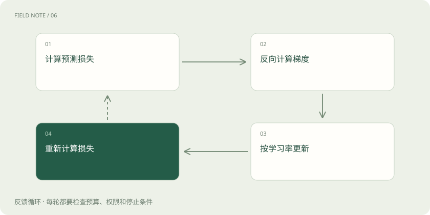

先读哪些知识
先用一个类比理解
像下山时先测坡度，再决定迈多大一步。
类比只帮助建立直觉，不等同于技术的完整机制。
一图看懂

概念边界
预测误差并非人的不满意程度；损失把训练目标变成可计算的数值。梯度描述参数微小改变时损失变化的方向，优化器据此调整参数。一次更新通常综合一批样本，不会只为一句话改一个独立开关。
内部怎样运作
学习率决定每步走多远，过大可能越过合适区域，过小则进展缓慢。训练损失下降可能伴随对训练材料的记忆，必须观察未参与更新的数据。
把机制放进具体场景
假设只有一个参数 w，损失为 (w−3)²。w=1 时损失是4，梯度为−4；学习率0.1让参数更新为1.4，新损失2.56。若学习率取1，参数跳到5，损失仍为4，说明步子过大可能越过低点。
取舍与容易忽略的限制
梯度只描述当前位置附近的变化，不是通往正确答案的导航地图。实际神经网络有大量相互作用的参数，优化器还可能利用历史梯度调整步长。因此不能根据某一次损失下降判断训练已稳定；需要观察一段更新过程，并区分随机批次造成的波动与持续发散。
放在一起对比
| 方式或概念 | 主要作用 | 关键边界 |
|---|---|---|
| 损失 | 衡量目标偏差 | 不等于用户满意度 |
| 梯度 | 指出局部变化方向 | 不保证到达全局最优 |
| 学习率 | 决定更新幅度 | 过大可能震荡 |
放进真实场景
SCENARIO
假设两批样本分别强调简短与详细回答，更新方向可能冲突。混合采样比例决定哪类信号更常出现，不能只看某一批训练后是否立即改善。
别踩这个误区
训练成绩和实际任务成绩需要分开记录；文字预测更准不保证引用更可靠。
想一想
训练损失为零是否代表用户问题都能答对？
不代表，损失只衡量给定训练目标与样本，未覆盖的问题仍可能失败。
关联阅读
资料与边界
本文为原创知识讲解。类比和图示经过简化；示例数字不代表实测或报价。整理日期：2026-11-04。文末列出对应技术的原始资料，具体功能与版本支持请以原文为准。